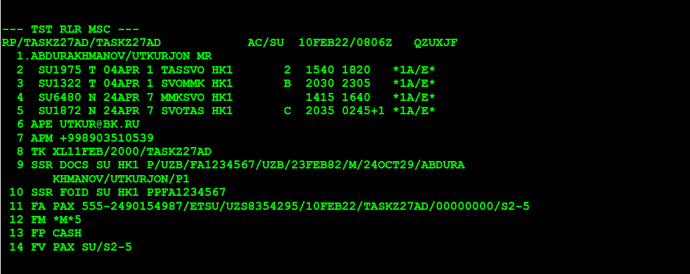
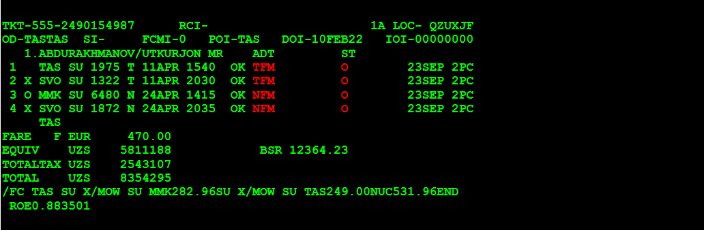

C доплатой по тарифу, без штрафа.
1-й ШАГ. Открываем бронирование (PNR)
RT номер брони (PNR)
2-й ШАГ. Открываем запись электронного билета (по номеру строки FA)
TWD/L11
3-й ШАГ. Проверяем статус электронного билета.
Должен быть «О»

4-й ШАГ. Проверяем оплаченные таксы.
TWD/TAX

5-й ШАГ. Вызываем правила тарифа билета принятого к обмену.
FQD «откуда» «куда» /A «авиакомпания» /D «дата вылета» / R, «дата продажи» / C «класс»
FQDTASMMK/ASU/D11APR*24APR/R,10FEB22/CT

FQDTASMMK/ASU/D11APR*24APR/R,10FEB22/CN

6-й ШАГ. Читаем правила тарифа билета принятого к обмену. Так как в данном авиабилете участвуют два тарифа, нам нужно проверить условия обоих тарифа и так как авиабилет полностью не использован применить штраф тарифа у которого сумма штрафа больше.
FQN03//PE
FQN02//PE

Как видно, по правилам обоих тарифа авиакомпания разрешает производить обмен как частично использованного, так и полностью неиспользованного билета без штрафа.
7-й ШАГ. Возвращаемся в бронирование.
RT

8-й ШАГ. Меняем даты вылета. Для примера на перелете туда (строка 2 и 3).
SB 04APR 2,3
9-й ШАГ. Сохраняем изменения.
RFUTKUR; ER
10-й ШАГ. Открываем PNR.
RT

11-й ШАГ. Открываем запись электронного билета (по номеру строки FA)
TWD/L11

12-й ШАГ. Создание маски TST с расчетом на дату переоформления билета: для просмотра ТАКС НОВОГО РАСЧЕТА:
FXP/ET/R,10FEB22
13-й ШАГ. Открываем запись электронного билета
TWD/L11
14-й ШАГ. Вызываем список оплаченных сборов для просмотра ТАКС СТАРОГО РАСЧЕТА:
TWD/TAX
15-й ШАГ. ДЕЛАЕМ РАСЧЕТЫ ДОПЛАТЫ ПО ТАКСАМ
Таксы НОВОГО РАСЧЕТА – таксы СТАРОГО РАСЧЕТА = в нашем случае 0 (доплаты по таксам нет)
16-й ШАГ. Вычисляем разницу в тарифах старого билета и новым расчетом на сегодняшний день.
Тариф НОВОГО РАСЧЕТА – тариф СТАРОГО РАСЧЕТА = в нашем случае 309106 сум (доплаты по тарифу 309106 сум)
17-й ШАГ. ДЕЛАЕМ ПОЛНЫЙ РАСЧЕТ ДОПЛАТ и берем оплату за обмен. Доплата по тарифу + доплата по таксам + ШТРАФ.
309106 + 0 + 0= 309106 сум.
18-й ШАГ.
TQT
TTI/EXCH/T2
19-й ШАГ. Если в маске билета не заполнены поля -вылет не ранее/не позднее-заполняем соблюдая правила.
TTI/T2/L1,2X/VXX16SEP/L3,4X/VXX16SEP
20-й ШАГ. Внести информацию об оплате: Х штраф=0 (с кодом СР), Т итого =309106, К1 курс=12364.23
TTK/T2/T309106/K1 12364.23
21-й ШАГ. Вводим номер первоначально выписанного билетапо строке FA(в нашей брони это строка 11).
FO*L11
Добавляем /P1 и нажимаем ENTER.
FO555-2490154987E1TAS10FEB22/00000000/555-2490154987E1/P1
22-й ШАГ. Исправляем форму оплаты (в нашей брони это строка 16).
RTF
16/+/CASH
Или можно удалить строку форма оплаты и заново внести. Пример:
FPO/CASH+/CASH
23-й ШАГ. Проверяем созданную маску расчета и оформляем билет.
TQT/Т2
RF UTKUR
Если выписка на прямую в системе Амадэус.
TTP/ET/RT/T-SU/T2
Если выписка через РТС.
TWD/L11+TTP/ET/T-SU/T2
25-й ШАГ. Проверка обмена.
Просмотр записи НОВОГО электронного билета (где 11 –номер строки FA).
TWD/L11
Просмотр записи СТАРОГО электронного билета.
TWD/О*
IG